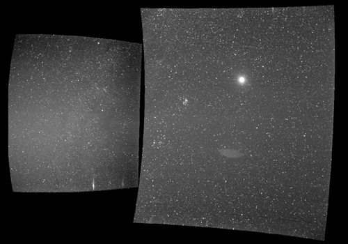

Bằng chứng giúp con người nhận ra Trái Đất không phẳng
12:00 - 20/6/2022
Trái Đất trông giống đốm sáng nhỏ với Mặt Trăng lấp ló phía sau trong hình ảnh do tàu vũ trụ NASA gửi về.
NASA công bố hình ảnh Trái Đất do tàu vũ trụ Parker ghi lại bằng camera đặc biệt hôm 25/9, Fox News đưa tin. Con tàu chụp ảnh hành tinh xanh ở khoảng cách 43,5 triệu km, trong lúc nó đang thực hiện hành trình khám phá Mặt Trời. Khoảng cách trung bình giữa Trái Đất và Mặt Trời là gần 150 triệu km. Trái Đất là điểm sáng gần trung tâm trong tấm ảnh bên phải. Khi nhóm nghiên cứu phóng to ảnh và quan sát kỹ, họ phát hiện một chỗ phình ra khác thường bên phải hành tinh xanh. Đây chính là phần rìa của Mặt Trăng đang khuất sau Trái Đất. Tàu Parker được phóng lên không gian bằng tên lửa Alliance Delta IV ngày 12/8. Nhiệm vụ trị giá 1,5 tỷ USD này sẽ giúp giới khoa học đến gần Mặt Trời nhất từ trước tới nay. Theo kế hoạch, Parker sẽ là tàu vũ trụ đầu tiên bay qua lớp ngoài cùng của khí quyển Mặt Trời.
Con tàu dự kiến tiếp cận Mặt Trời vào tháng 11. Để chịu được mức nhiệt lên đến 1.370 độ C, nó được trang bị tấm chắn đặc biệt dày 11,4 cm làm từ vật liệu carbon composite. Con tàu phải đối mặt với sức nóng và bức xạ cực mạnh khi tới cách bề mặt Mặt Trời khoảng 6 triệu km, gần hơn nhiều so với kỷ lục cũ là 43,5 triệu km do tàu Helios 2 xác lập năm 1976. Tàu Parker sẽ mượn lực hấp dẫn của sao Kim để hoàn thành 7 lần bay qua Mặt Trời, dần dần tiến sát ngôi sao này. Con tàu sẽ bay với vận tốc khoảng 692.000 km/h, kỷ lục mới với vật thể nhân tạo, trong lần tiếp cận gần nhất năm 2024.